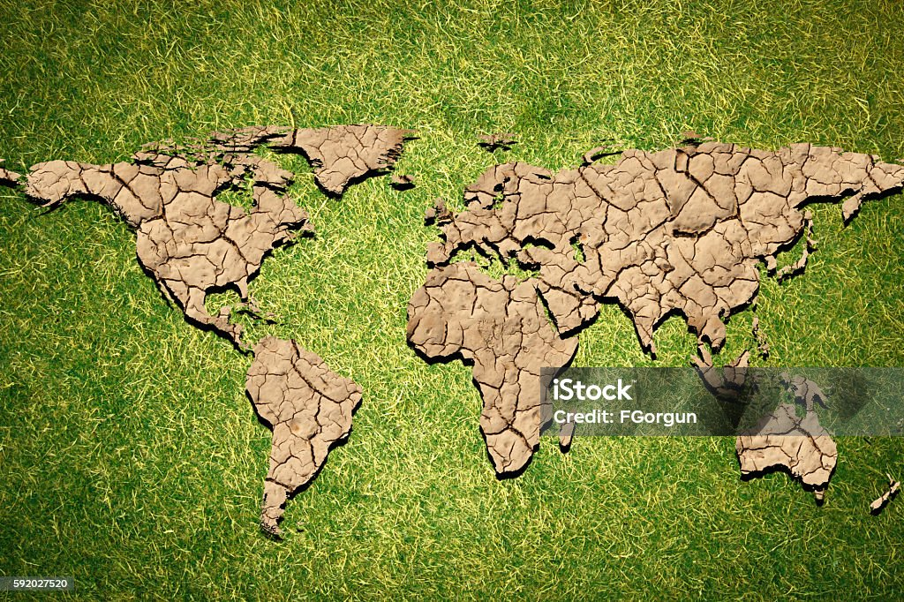

Desertification is a type of land degradation in which a relatively dry land region becomes increasingly arid, typically losing its bodies of water as well as vegetation and wildlife.
It is caused by a variety of factors, such as climate change and human activities.
Desertification is a significant global ecological and environmental problem that affects more than 100 countries.
It is a major concern for the international community, as it has a significant impact on the environment, economy, and human health.
Desertification is a complex process that is influenced by a variety of factors, including climate change, deforestation, overgrazing, and poor agricultural practices.
It is a major threat to the environment and human health, as it can lead to the loss of fertile land, the destruction of ecosystems, and the displacement of people.
Desertification has a significant impact on biodiversity, livelihoods, and ecosystem resilience. It can lead to the loss of plant and animal species, the destruction of ecosystems, and the displacement of people. Desertification can also lead to the loss of fertile land, which can have a significant impact on agriculture and food security. It can also lead to the loss of water resources, which can have a significant impact on human health and well-being. Desertification can also lead to the loss of ecosystem resilience, which can have a significant impact on the environment and human health. It is a major threat to the environment and human health, as it can lead to the loss of fertile land, the destruction of ecosystems, and the displacement of people.
Desertification and land degradation result from natural processes such as climate variability and human activities, including deforestation, overgrazing, unsustainable agriculture, water mismanagement, urbanization, and population pressure. These processes lead to soil erosion, loss of vegetation cover, and reduced soil fertility, exacerbating environmental degradation and threatening the resilience of ecosystems. Addressing desertification and land degradation requires comprehensive strategies integrating natural resource management, sustainable land use practices, and climate change adaptation measures to restore degraded ecosystems and promote resilience.
To stop desertification and land degradation, a multifaceted approach is needed, including promoting sustainable land use practices, implementing integrated watershed management, reducing overgrazing, restoring vegetation cover,
managing water resources sustainably, controlling soil erosion, combating climate change, promoting sustainable urban planning, empowering local communities, strengthening policy and governance, and enhancing international cooperation.
These efforts aim to halt and reverse land degradation, restore ecosystems, and ensure the long-term sustainability of land resources.